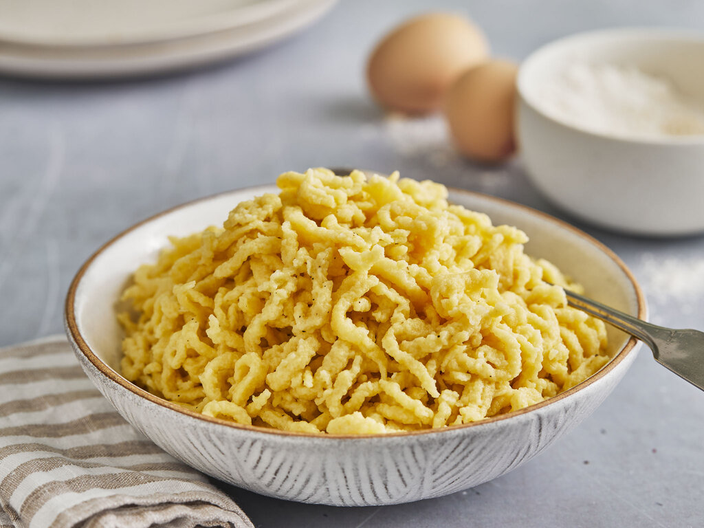

Spaetzle

Spaetzle are a southgerman noodleish dish, they can be eaten both on the side or as a Maindish, in such a case they are often served with cheese and roasted onions.
Ingredients
- ½ cup all-purpose flour, plus more as needed
- 1 large egg
- ½ teaspoon kosher salt
- 1 pinch cayenne pepper
- 1 tablespoon creme fraiche, sour cream, or plain yogurt
- 3 tablespoons milk, or as needed
Steps
- Place flour, egg, salt, cayenne, cream fraiche, and milk in a mixing bowl. Whisk together until batter drips slowly off the whisk. If batter seems too thin, add a bit more flour; if too thick, add a bit more milk. You can test the thickness using the smooth side of a cheese grater with fairly large holes. If a dollop of the batter does not drip through the grating holes, it's the right consistency.
- Bring a pot of salted water to a simmer over medium-high heat. Use a spatula to push a spoonful of batter through the holes of the smooth side of the grater into the simmering water.
- When dumplings rise to the surface of the water, they are done. This will take just a few minutes. Remove dumplings with a slotted spoon, and repeat in batches with remaining batter.